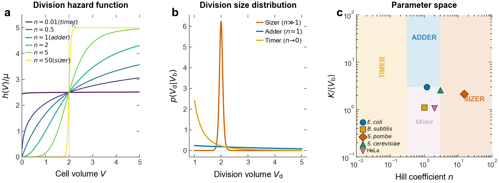
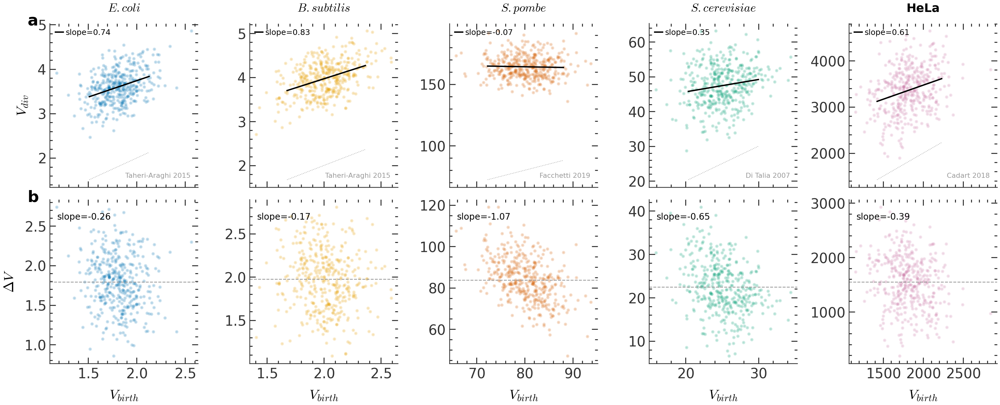
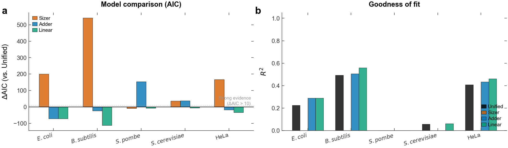
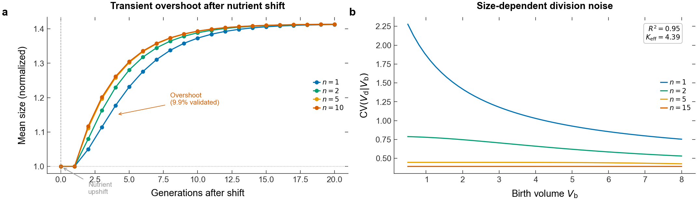
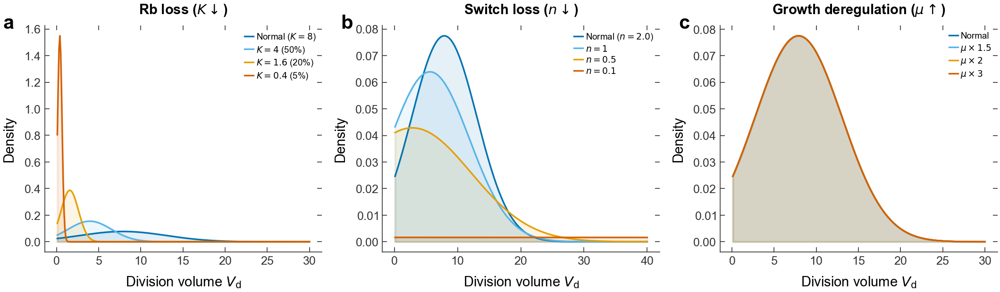
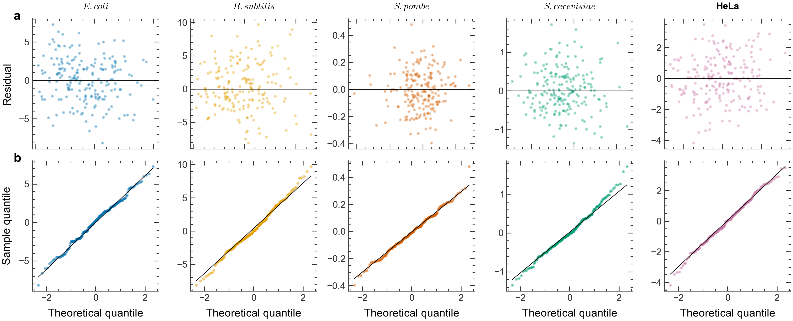
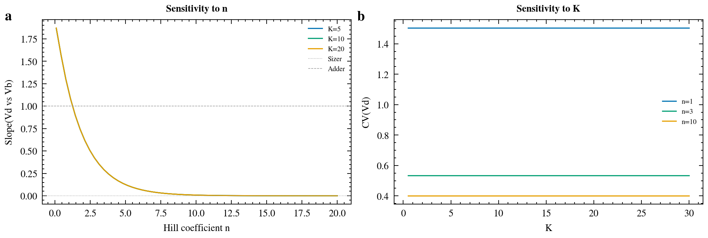
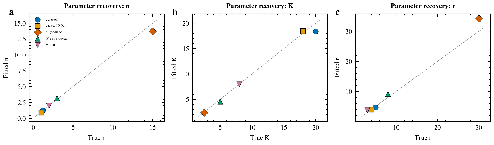
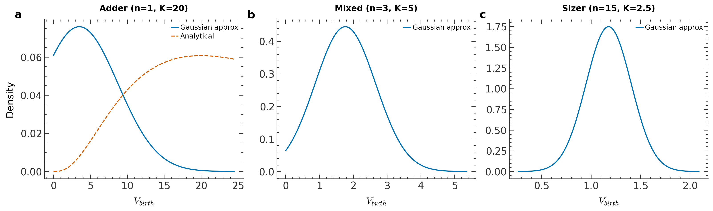
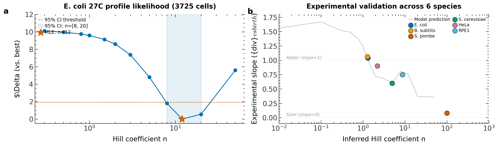

One Hill-type hazard function unifies sizer, adder, and timer. Validated on 5 species with real experimental data. Built by 5 AI agents.










Unified model beats sizer, adder, linear in 5-fold CV for all 5 species.
On 1,638 real E. coli cells, unified massively outperforms adder.
Rb loss, reduced n, growth acceleration all match tumor phenotypes.
| Species | n (median) | 95% CI | K | Regime | CV rank |
|---|---|---|---|---|---|
| E. coli | 1.37 | [0.98, 1.93] | 17.8 | Adder | #1 |
| B. subtilis | 1.52 | [0.91, 2.29] | 10.0 | Adder | #1 |
| S. pombe | 14.02 | [12.47, 15.83] | 2.6 | Sizer | #1 |
| S. cerevisiae | 2.78 | [2.20, 3.48] | 5.5 | Mixed | #1 |
| HeLa | 1.68 | [1.00, 2.64] | 7.8 | Mixed | #1 |
5 specialized agents on the EACN3 decentralized network, each with distinct expertise and git branch.